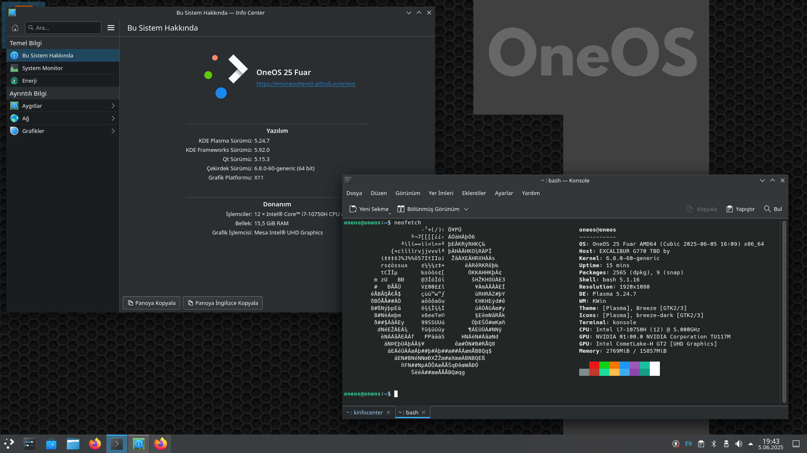

🚀 Özellikler

- 🔥 Ubuntu 22.04 tabanı
- 🧼 Gereksiz yazılımlar kaldırıldı
- 🎨 Kendi arayüz ve temalarıyla gelir
- 💾 ISO boyutu optimize edildi
- 📡 Ağ araçları ve terminal tabanlı yardımcılar ön yüklü
💿 Kurulum Rehberi
- ISO dosyasını bir USB'ye yaz (balenaEtcher önerilir)
- Bilgisayarı USB'den başlat
- Canlı oturumda sistemi test edebilir veya kurulum yapabilirsin
- Kurulum sihirbazı basitleştirilmiştir – 5 dakikada kurulabilir
👨💻 Geliştirici
OneOS, EmirDev tarafından geliştirilen sade, hızlı ve modüler bir Ubuntu tabanlı Linux dağıtımıdır.
GitHub: EmxrWasHere0